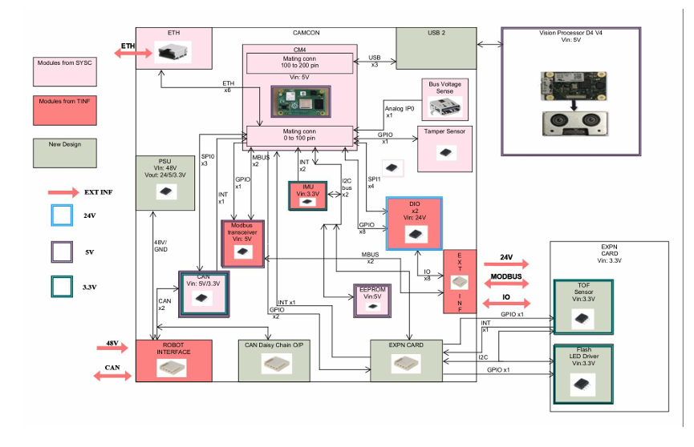
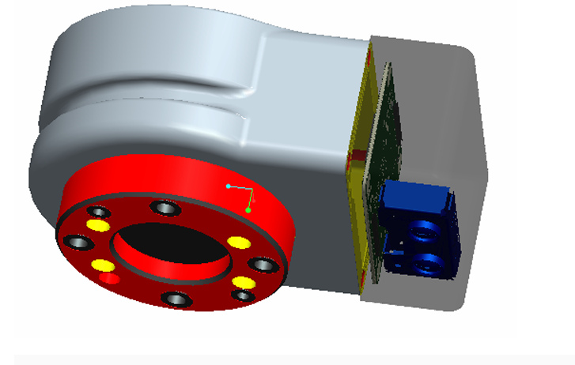
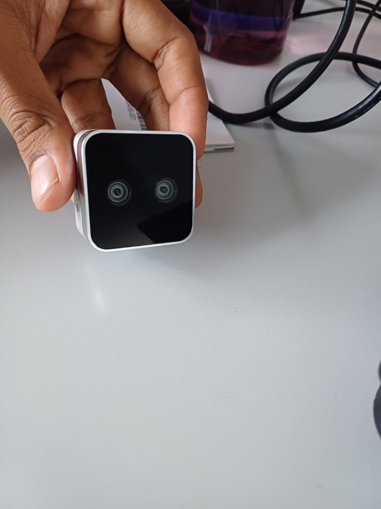

Steering Torque Test System | ARAI
Sept. 2024 - Present
- Engineered real-time cascaded PID control system for 1KW AC servo motor using STM32F446RE MCU, integrating position and velocity feedback loops to achieve <0.1° positioning accuracy
- Developed deterministic RTOS scheduler managing multi-rate tasks (20kHz motor commutation, 1kHz position control, 500Hz sensor acquisition) with <50µs control jitter
- Created Python-based GUI application enabling real-time visualization of torque-angle-time relationships and automated test cycle execution
Autonomous Robot Manipulator | Robocup ARM Challenge 2023
Jan. 2023 - July 2023
Developed an autonomous robot manipulation system achieving significant success in international competition.
- Developed hybrid perception pipeline integrating YOLOv4 with RANSAC-ICP registration using MATLAB Computer Vision toolbox and ROS, achieving 40% improved pose estimation
- Created Task and Motion Planning framework integrating symbolic task planning(TAMP) with RRT-based motion planning
- Achieved 85% grasp success rate in cluttered environments
- Secured 5th Rank globally and 3rd in Asia, among >20 teams worldwide
Industrial Vision System | Systemantics
Aug. 2023 - Dec. 2023



- Architected dual-sensor vision system with ROS2, RealSense D405, and VL53L3CX ToF sensors, achieving 98.5% pick success rate
- Designed and assembled modular support board featuring LED illumination control and ToF ranging functionality
- Engineered vision pipeline integrating YOLO-based detection with stereo-ToF processing, achieving 95% classification accuracy
- Designed ROS2 node architecture for sensor fusion with 50ms latency
High-Performance Electric Kart | Indian Karting Race 6.0
Aug. 2021 - Mar. 2022
- Led 20-member cross-functional team to design and build award-winning electric kart
- Developed torque vectoring system using gain-scheduled PID control on Raspberry Pi with ROS2
- Implemented real-time telemetry system enabling data-driven performance optimization
- Secured 1st in Engineering Design and 2nd Runner-up in Innovation under electric-category
Autonomous Path-follower Drone | Mathworks Minidrone Competition
Aug. 2021 - Mar. 2022
- Engineered real-time path planning system using MATLAB/Simulink achieving <2cm tracking error
- Developed vision-integrated control system with PI loops running at 200Hz
- Architected state machine-based control system for autonomous takeoff, tracking, and precision landing
Technical Skills
Programming & Tools
- C++, Python, ROS/ROS2
- MATLAB, Simulink, OpenCV, PyTorch
- Qt, Linux, Git
Hardware & Systems
- STM32, Raspberry Pi, RTOS
- Sensor Integration & Fusion
- Real-time Control Systems